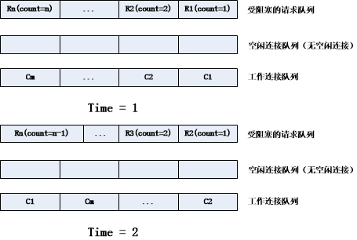
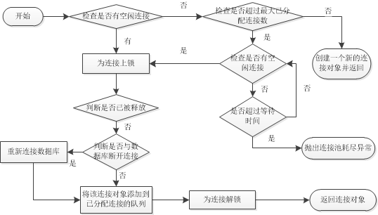

- ResourceBundle和Properties比较
一般来说，ResourceBundle类通常是用于针对不同的语言来使用的属性文件。 而如果你的应用程序中的属性文件只是一些配置，并不是针对多国语言的目的，那么使用Properties类就可以了。 - Java内存泄漏
java内存的分配是由程序完成的，程序员通过关键字new为每个对象申请内存空间，所有的对象都在队（Heap）中分配空间。（临时变量在堆栈Stack中分配内存）。Java的垃圾回收机制GC负责内存的释放，为了能够正确释放对象，GC必须监控每个对象的运行状态，包括对象的申请，引用，被引用，赋值等。
Java内存泄漏就是存在一些被分配的对象，这些对象有两个特点：首先，这些对象是可达的，即在有向图中存在通路（也就是存在该内存的引用）；其次，这些对象是无用的，即程序以后不会再使用这些对象。如果对象满足这两个条件，就可以判定为Java的内存泄漏。
与C++内存泄漏的区别，C++内存泄漏范围更大。C++不存在GC，所以有些对象被分配了内存空间，然后却不可达，这些内存将永远无法回收。
参考资料
名词解析
- RVM
Ruby Version Manager - RubyGem
What is a gem A RubyGem is a software package, commonly called a “gem”. Gems contain a packaged Ruby application or library - RubyGems
The RubyGems software itself allows you to easily download, install, and manipulate gems on your system.
常用命令
- RubyGems命令
# 更新升级RubyGems软件自身
gem update --system
# 更新所有已安装的gem包
gem update
# 查看本机已安装的所有gem包
gem list
Apache Tomcat 7系列的版本中使用了JDBC Connection Pool替代传统的commons-dbcp作为新的数据库连接池。其中很重要的一个原因是，commons-dbcp是单线程的，为了保证线程安全它必须将整个线程池上锁，并且它在对高并发的支持方面表现很差。JDBC Connection Pool一个很重要的新特性就是它对高并发环境和多核/多处理器系统的支持。下面将通过对JDBC Connection Pool的源码分析，深入理解其连接池设计的思想以及对高并发的解决方法。
连接池的存储设计
连接池使用两个阻塞队列BlockingQueue分别存储已分配的active和空闲的idle连接对象。如果BlockingQueue是空的，从BlockingQueue中取元素会被阻断进入等待状态，直到BlockingQueue进入元素后才被唤醒；同样，如果BlockingQueue是满的，任何试图往队列里存元素也会被阻断进入等待状态，直到BlockingQueue中有空间时才会被唤醒继续操作。
Tomcat 7 JDBC Connection Pool中的FairBlockingQueue实现了BlockingQueue接口。FairBlockingQueue采用先进先出(FIFO)原理，从而保证最先进入idle队列的连接最先被分配。FairBlockingQueue的offer和poll操作时均使用ReentrantLock锁定该连接，操作成功后解锁。ReentrantLock锁是一个可重入的互斥锁，它由最近成功获得锁定，并且还没有释放该锁的线程拥有。所以FairBlockingQueue在offer和poll一个连接对象时，能够确保该连接不会被其它并发的请求干扰，导致死锁。（后面小节中提到的锁均是指ReentrantLock）。
并发请求与连接对象的映射
当同时有多个用户请求连接对象时，若有足够的连接对象，则每个用户根据请求的时间依次从idle队列中获取一个连接对象。若idle队列中没有足够的队列，则需要按请求时间依次将这些用户请求添加到一个先进先出FIFO的受阻塞的请求队列，每次添加都是在队列尾部插入，从而保证一旦有空闲连接产生时，先来的请求最先获得连接。一旦请求获得连接对象后，它将从受阻塞的请求队列中移除。在向受阻塞的请求队列中添加和移除请求时，都需要对队列上锁，防止同时有多个请求被添加、或同时有多个请求被移除、或同时既有请求被添加又有请求被移除等情况发生，导致请求队列的乱序，直到操作完成后解锁。
连接池为每一个没有分配到连接的请求设置一个同步倒数计数器CountDownLatch，每个计数器传入的初始值分别为请求到来的顺序。例如，最早来到的且未被分配连接的请求的同步计数器初值设为1，后面来到的请求初值依次加1。计数器大于0，该线程就会被阻塞，直到计数器为0，该线程才能继续执行。每次当有空闲连接产生，并且成功分配给受阻塞的请求队列最前面的请求后，所有被阻塞的请求的计数器减1，因此刚获取连接对象的请求线程的计数器值变为0，从而可以继续执行，其它请求线程则继续处于阻塞状态。
在Tomcat 7 JDBC Connection Pool中，自定义了ExchangeCountDownLatch类，该类继承CountDownLatch，并且添加了一个成员变量，表示该请求线程最终被分配到的连接对象。
下面通过一个例子说明以上过程：如下图1中Time=1时，受阻塞请求队列中有n个请求线程受阻塞，各自的同步计数器值分别从1到n，此时空闲连接队列为空，工作连接队列中队尾的连接为Cm；假设Time=1结束后，工作连接队列中的C1被释放，则在Time=2时，受阻塞请求队列的队首R1(count=1)线程获得刚被释放的C1连接，因此它被移除受阻塞请求队列，队首请求变为R2，并且所有的受阻塞的请求线程计数器都减1，此时R1的count=0可以继续执行，R2的count=1，继续被阻塞。C1连接因为被R1所占用，因此又被添加到工作队列的队尾。

获取连接对象的流程
当用户请求连接对象时，若连接池中有空闲连接则立即返回该连接，若没有空闲连接但是连接总数没有达到设定的最大值，则创建一个新的连接对象并返回。否则循环等待并检查是否有空闲连接，若有空闲连接产生则返回该连接，若超过等待时间仍无空闲连接产生，则抛出异常。下图2详细说明了请求连接对象的流程。

在检查到idle队列中存在空闲连接后还需要对连接作有效性的检查，以确定该连接对象与数据库是处于连接状态，若连接断开需重新连接，以保证该连接对象的有效性。为了确保多个请求线程不会竞争同一个连接对象，首先获得该连接的线程需要对该连接上锁，直到检查完毕确保该连接有效并被添加到active队列后才为其解锁。
Java中的进程与线程
- 进程 在JDK中与进程直接关联的类是Java.lang.Process，它是一个抽象类，ProcessImpl是JDK提供的一个实现该抽象类的类，如果用户创建一个进程，那么肯定会伴随着一个新的ProcessImpl实例。Java.lang.Runtime.exec方法和Java.lang.ProcessBuilder.start方法都可以创建一个本地的进程，然后返回代表这个进程的 Java.lang.Process引用。JDK的ProcessImpl实现，引用了native的create，close，waitfor，destory和exitValue方法，native方法是依赖于操作系统平台的本地方法，它的实现是用C/C++等底层语言实现的。针对Windows系统而言，JVM中对应native的create方法实际上是调用了操作系统的CreatePipe和CreateProcess方法来创建一个进程，同时在JVM中保存了这个进程对应的句柄，然后返回给了ProcessImpl类，但是该类对返回句柄进行了隐藏。
- 线程 Java创建线程的方式有两种：继承Thread类，实现Runnable接口
1 //继承Thread类
2 class MyThread extends Thread{
3 public void run() {
4 System.out.println("My thread is started.");
5 }
6 }
7 //实现Runnable接口
8 class MyRunnable implements Runnable{
9 public void run() {
10 System.out.println("My runnable is invoked.");
11 }
12 }
对于以上两种方法创建线程时，调用的方式分别如下:
1 //继承Thread类
2 MyThread myThread = new MyThread();
3 myThread.start();
4 //实现Runnable接口
5 Thread myThread = new Thread( new MyRunnable());
6 myThread.start();
以上两种方法，不管哪一种都必须实现一个run方法，该方法本质上是一个回调方法。有start方法创建的线程会调用run方法从而执行需要的代码。run方法并不是一个真正的线程函数，只是被线程函数调用的一个java方法而已，如果直接调用run方法，并不会创建一个新的线程。
参考资料
1. Java 中的进程与线程 - IBM DeveloperWorks